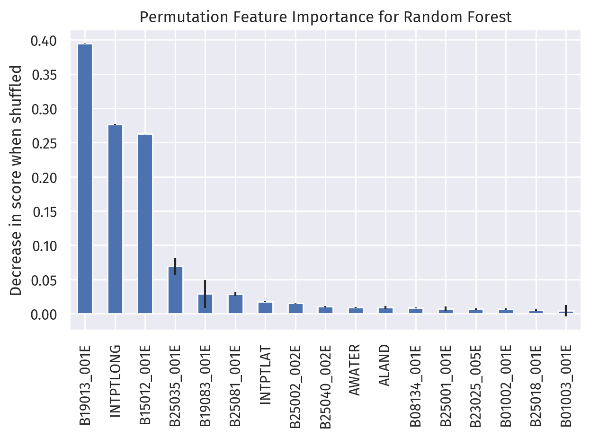
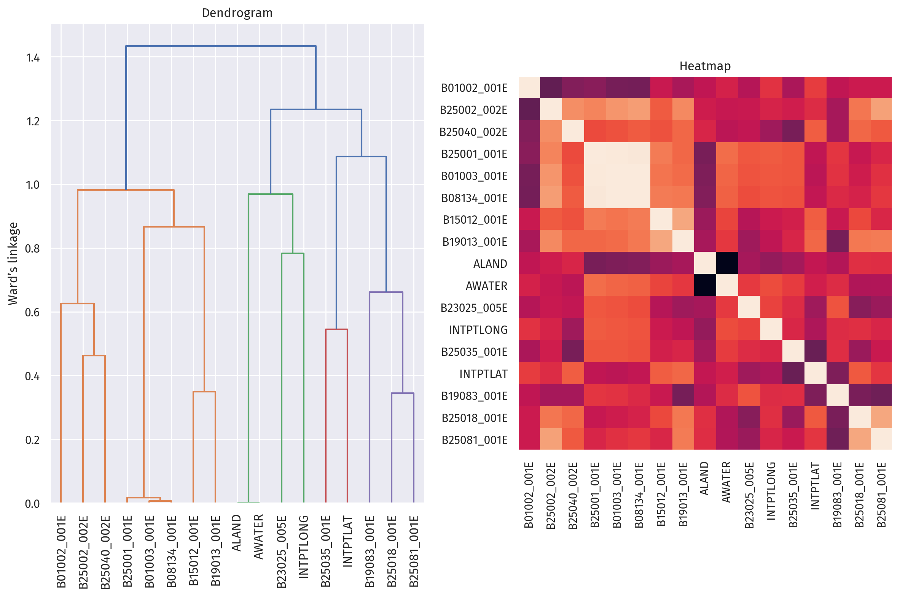

Abstract
Our project utilized (classical and deep) machine learning techniques to analyze and predict housing prices across different counties in the United States, with a focus on understanding the most impactful factors. We were able to carefully identify, select, and merge datasets containing variables related to housing, population, and geo-spatial features. After constructing several models, including classical ones via scikit-learn and a neural network via PyTorch, we found that the highest accuracy was achieved by our Random Forest model, followed by Gradient Boosting regression; the neural network performed relative poorly. These models helped us to identify some of the most important factors of housing prices, including median income, education attainment, and perhaps surprisingly, longtitude. The relevant source code is hosted on Github.
Introduction
Housing prices are a crucial aspect of the American economy. It directly influences various sectors, including the real estate industry, financial markets, and consumers’ purchasing power. Understanding the determinants of housing prices is therefore essential for potential house buyers, sellers, renters, and city planners alike.
Thus, this project aims to dissect the relationship between housing prices, demographic, and socioeconomic indicators across US counties. We believe our project can inform these relevant sectors, empower stakeholders, and pave the way for future work on what actually influences housing prices.
Ho, Tang, and Wong (2021) studys property price prediction using three machine learning algorithms, including Support Vector Machines (SVM), Random Forest (RF), and a Gradient Boosting Machine (GBM). Their study finds that RF and GBM provided superior performance over SVM. In our work, we also incorporate Random Forest models due to their demonstrated efficacy and robustness. Interpretability is also a key advantage of Random Forest models.
Similarly, Thamarai and Malarvizhi (2020) highlights the importance of utilizing different house-level attributes for price prediction, such as the number of bedrooms, age of the house, and proximity to essential facilities like schools and shopping malls. We too consider a multitude of housing factors, albeit not directly due to the nature of the US Census, and additional socioeconomic features in our analysis.
In the meantime, Zulkifley et al. (2020) emphasizes the importance of data mining in predicting housing prices, and finds that locational and structural attributes significantly influence such predictions. As such, our comprehensive set of features include geospatial information, including position and land area, in line with this recommendation.
Through our analysis, we aim to contribute to this growing body of research, and provide further, timely insight into housing price prediction and its influencing factors.
Value Statement
These are the users and potential beneficiaries of our project:
- Potential home-buyers and renters, who can make informed decisions when purchasing properties
- Real estate professionals, who can provide better guidance to their clients
- Urban planners and policymakers, who can make more informed decisions regarding zoning, land use, and housing policies
- Social workers, who can identify driving factors of inequality in housing and rent prices, and prioritize advocating for change in these key areas
These are the potentially excluded from benefit or harmed by our project:
- Marginalized populations, who may be underrepresented or misrepresented in the data, so our model may not accurately reflect their needs and wants
- Residents of certain reguins with inaccurate predictions, leading to incorrect conclusions about said region, and / or suboptimal buying / renting decisions
My personal reasons for working on this problem:
After the most recent Fed rate hike, for the first time, since 2007, the US Federal Funds Target Range has been pushed above 5%. This impacts the whole economy, as well as the housing market, including fixed-rate mortgages, so I thought it interesting to look at housing prices across the country.
Will our project make the world a more equitable, just, joyful, peaceful, or sustainable place?
Under the assumption that our data sources represent different demographics and regions fairly, yes, we are confident that with the additional transparency and insight provided by our project, the US housing market has the potential to become more equitable, just, and sustainable.
Materials and Methods
Data
We utilized two main data sources: Zillow (2011), and the U.S. Census Bureau (2021). We also collected other explanatory predictors, such as land area and geospatial information (longitude & latitude), that are also from the Census Bureau.
The US census data is from the 2017-2021 ACS (American Community Survey) 5-Year PUMS (Public Use Microdata Sample), accessed through the Census API per PUMS Documentation. This dataset contains information collected by the Census Bureau about individual people or housing units. We believe this is a representative and authoritative source of information for various demographic and economic factors, that can influence housing prices and affordability.
Zillow Housing Data is a collection of datasets from Zillow, a real-estate marketplace company. It contains features include housing prices, rental prices, city, state, etc. The relevant data can be accessed here, under “ZHVI All Homes (SFR, Condo/Co-op) Time Series, Smoothed, Seasonally Adjusted($), by County”.
Lastly, we collected geospatial data for each county from US Census Bureau (2022): U.S. Gazetteer Files 2022.
In our finalized dataset, each row corresponds to a US county as an observation. Each observation contains the average home value, as well as other explanatory factors like median age, income, and education attainment.
Despite our best efforts in collecting comprehensive data, it’s important to acknowledge some limitations. While we were able to gather county-level data from sources like Zillow and the US Census, certain house-level factors, like the exact condition of a house, or neighborhood characteristics, might not be fully represented. Moreover, while the US Census publishes widely-used datasets of high quality, it may still underrepresent certain marginalized communities, potentially introducing biases into our findings.
Selected Variables
A full list of these variable names can be found here, under “2021 ACS Detailed Tables Variables”.
We were able to select the following independent variables from the ACS dataset:
B01002_001E: total median ageB01003_001E: total populationB08134_001E: travel time to workB15012_001E: number of Bachelor’s degreesB19013_001E: median household income, inflation-adjustedB19083_001E: gini index of income inequalityB23025_005E: civilian labor force, unemployedB25001_001E: total housing unitsB25002_002E: occupancy is “occupied”B25018_001E: median number of roomsB25035_001E: median year of constructionB25040_002E: houses with heating fuelB25064_001E: median gross rentB25081_001E: count of housing units with a mortgage
Additional independent variables include coordinates for each county, and land and water area (as a percentage of total area).
Our dependent variable is Zillow’s Home Value Index for 2021, which reflects the “typical home value” for houses in a county. Zillow reports this index per month, so the average is taken for the entirety of 2021.
For future bias auditing, we also kept these relevant variables:
B02001_002E: White aloneB02001_003E: Black or African American aloneB02001_004E: American Indian and Alaska Native aloneB02001_005E: Asian aloneB02001_006E: Native Hawaiian and Other Pacific Islander aloneB02001_007E: Some other race aloneB02001_008E: Two or more racesB02001_009E: Two races including Some other raceB02001_010E: Two races excluding Some other race, and three or more races
Variable importance
Another feature we paid attention to was variable importance. How did each variable contrinbute to each model’s prediction of housing prices?
To ensure consistency between models with different levels of interpretability, we chose permutation importance as our measurement of feature importance. Essentially, by permutating a certain feature column, we “mix up” that column’s influence on the model predictions, so that the resulting difference in performance can be attributed to that feature column.
However, if multicollinearity or correlation between features are present, then permutating one column has little effect on model performance, because the information provided by that feature can be accessed in another, correlating feature. Therefore, it is also important to plot and inspect a dendrogram for our selected features, to identify any correlations.
Results
We fitted our selected variables against several popular classical models from the scikit-learn package.
These include Linear regression, Linear regression with SGD, Ridge regression, Gradient Boosting regression, Support Vector Machines, and Random Forest models.
We also proceeded to build our own fully-connected neural network using PyTorch.
Model Performance
In order to evaluate those algorithms we used, we implemented two metrics to measure the relative performance:
- Coefficient of determination. This is the R^2 score, or the residual sum of squares divided by the total sum of squares, for a certain model. The best possible score is 1.0, and because the model can be arbitrarily worse, scores can be negative, and there is no worst score. When the prediction residuals have zero mean, this corresponds to the percent of variance explained by the model.
- Mean Squared Error (MSE). This represents the average of the squared differences between the predicted and actual values. In other words, it quantifies the difference between the estimator (the model’s prediction) and the actual value.
The following table lists the R^2 scores and MSEs for our models, in order of decreasing performance:
| Score | MSE (\times 10^9) | |
|---|---|---|
| Random Forest | 0.9109 | 1.6078 |
| Gradient Boosting | 0.8612 | 2.5038 |
| Linear Regression with SGD | 0.7677 | 4.1899 |
| Ridge Regression | 0.7675 | 4.1939 |
| Linear Regression | 0.7673 | 4.1976 |
| Support Vector Machine | 0.7327 | 4.8206 |
| Neural Network | 0.5231 | 8.6008 |
We observe that tree-based models, like Random Forest and Gradient Boosting (an improvement on Decision Trees), perform well on our dataset, followed by linear regression-like models, and then Support Vector Machines.
The fully-connected neural network performed poorly on our regression task.
Feature Importance

Here are the top 5 features ordered by importance, as determined by our Random Forest model:
B19013_001E: median household income, inflation-adjustedINTPTLONG: longitude (decimal degrees)B15012_001E: number of Bachelor’s degreesB25035_001E: median year of constructionB19083_001E: gini index of income inequality
Note that feature importance is not the same as a coefficient in linear regression, as the relationship may not be linear. In our Random Forest regressor model, particularly, the corresponding explanation is most likely segmented and discrete.
Feature correlation

The above figure shows the dendrogram (evaluated by Ward’s linkage) and heatmap of correlation between each independent variable in our model.
On the left, we can observe that B01003_001E (total population) is correlated with B08134_001E (travel time to work) and B25001_001E (total housing units). This is reasonable because the number of housing units, and subsequently travel time to work, does depend on how many people are inside the county.
On the right, we can see that land and water area are strongly correlated, as shown by two black squares. This is due to land and water area being percentages instead of absolute values, so they will always add up to one.
Concluding Discussion
Our project worked in the following ways:
We were able to apply our learning in the course to predict housing prices across US counties. We also learned a lot more about machine learning models, in particular the nuances and technicalities concerning feature importance, correlated features, and
We also applied our learning to implement a fully-connected neural network, and verified its subpar performance on tabular data.
Our project goals were partially met, in that our data processing, model implementation, model evaluation, and analysis on feature importance are complete.
We were hoping to identify a comprehensive framework for auditing bias, but were unable to find a methodology that goes beyond arbitrarily comparing cross-sectional trends and biases. Therefore, we did not deliver any bias audits, despite having relevant data available.
Given more time, we may be able to focus on bias auditing, and reproducing models from previous literature to evaluate our model’s performance. There is also an opportunity for field research on our model’s predictions, potentially through interviews, simulated auctioning events, or case studies for existing homes.
Group Contributions Statement
We met and worked together on this project every week.
Bell was mainly responsible for data processing, visualization, and fitting classical models. He wrote relevant code to clean and merge the data. He also generated insightful visualizations such as an interactive map. Additionally, he designed and executed numerous experiments, with a particular focus on model validation and performance assessment. Then he carried out several classical model experiments, and in particular related them to feature importance.
Jiayi primarily focused on training a neural network from scratch. He coded the data loader, training loops, and the fitting of the PyTorch model. He also performed several experiments related to hyperparameter tuning. He helped in finding suitable datasets and selecting relevant variables, as well as identifying and plotting multicollinear features. Additionally, he gathered materials into a preliminary version of this blog post.
The project proposal, presentation slides, and this blog post are of equal contribution between the two authors. (This excludes the “personal reasons” and “Personal Reflection” sections.)
Personal Reflection
What did you learn from the process of researching, implementing, and communicating about your project?
A lot of data science is data cleaning and tuning hyperparameters, and this was heartfelt throughout this project. Even though we stayed in the realm of organized and clean datasets with clear cross-walks (FIPS codes), the data preparation still took a significant amount of our time.
Through comparing models in scikit-learn and our own neural network in PyTorch, I can now appreciate the differences, similarities, and nuances for each model better than before.
One particularly valuable learning outcome was using PyTorch to build a data loader and train a neural network.
How do you feel about what you achieved? Did meet your initial goals? Did you exceed them or fall short? In what ways?
I am happy with the progression of our project, from an empty folder to multiple notebooks with data, models, visualizations, and even a map.
My initial goals concerning writing quality code, drafting and revising this blog post, and collaborating on the project presentation were achieved.
I exceeded these goals in incorporating additional, careful analysis of our independent variables.
This blog post was submitted after the “best by” date, due to collaborator availability constraints.
In what ways will you carry the experience of working on this project into your next courses, career stages, or personal life?
Two years ago, I submitted a blog post on Jails, Voter ID Laws, and Turnout for my Econ Stats course. A lot has changed to both the world and myself in these two years, but one recurring theme is the intersection between data, models, and real-life impact, whether it be measuring, understanding, or changing the world around us.
This project has been the continuation of that theme, and I am confident that I will continue to understand the world through data, be mindful of the effect of such understanding, and show reverence to the struggles and triumphs of every individual, represented behind rows in a dataframe.